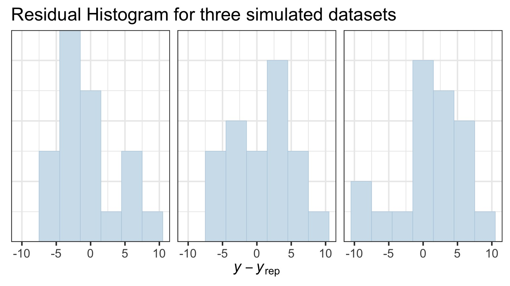
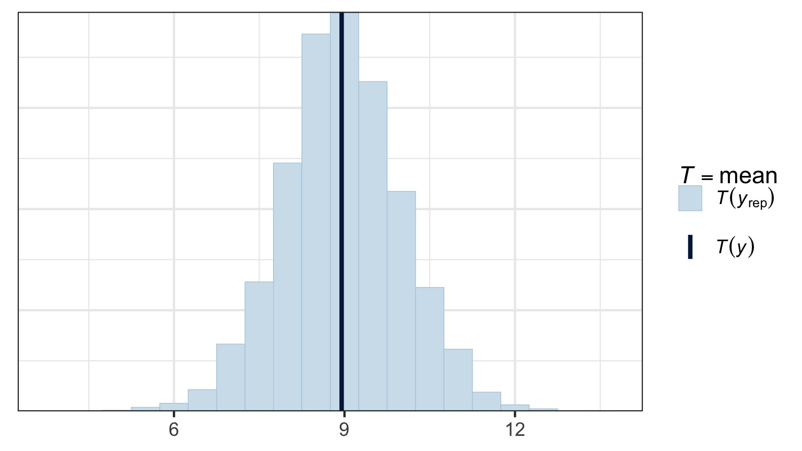
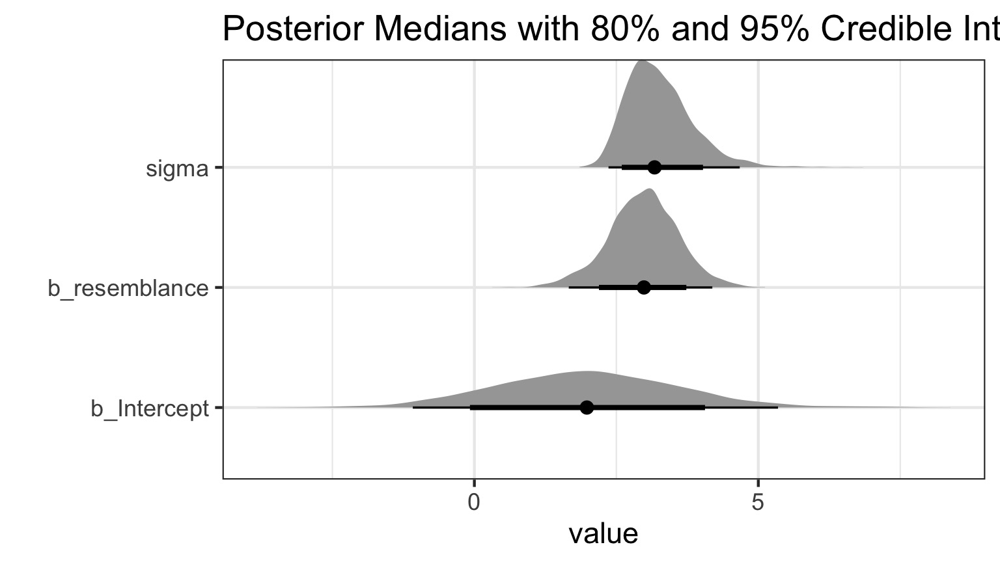
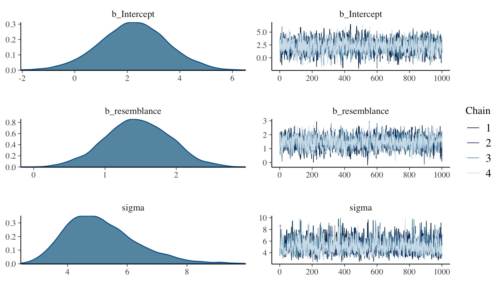

Fitting Linear Models with Bayes

Bayesian Inference

Estimate probability of a parameter
State degree of believe in specific parameter values
Evaluate probability of hypothesis given the data
Incorporate prior knowledge
Bayes Theorem Expanded
\(p(\theta | X) = \frac{p(X | \theta)P(\theta)}{\displaystyle \sum_{i=0}^{j} p(X | \theta_{i})p(\theta_{i})}\)
\(p(\theta | X) = \frac{p(X | \theta)P(\theta)}{\int p(X | \theta)p(\theta)d\theta}\)
Markov Chain Monte Carlo Sampling (MCMC)

Markov Chain Monte Carlo Sampling (MCMC)
If we cannot analytically solve a distribution, we can still simulate from it:
Chose a set of starting values X at t=0
Chose a random set of parameters, Y, based on X
Calculate an acceptance ratio, \(\alpha\), based on P(Y)/P(X)
If \(\alpha \ge 1\) X(t+1) = Y
Otherwise, select a uniorm random number between 0 and 1, U
If \(U \le \alpha\), X(t+1) = Y. Otherwise, X(t+1) = X.
Rinse and repeat
(Note, this is the Metropolis-Hastings Algorithm - there are others)
Markov Chain Monte Carlo Sampling (MCMC)
This is a time series. To use it for inference to sample from the final stationary distribution:
Discard a ’burn in’ set of samples
‘Thin’ your chain or use other methods to reduce temporal autocorrelation
Examine chain for convergence on your posterior distribution
Evaluate multiple chains to ensure convergence to a single distribution
Markov Chain Monte Carlo Sampling (MCMC)

Markov Chain Monte Carlo Sampling (MCMC)
Markov Chain Monte Carlo Sampling (MCMC)

Markov Chain Monte Carlo Sampling (MCMC)

Markov Chain Monte Carlo Sampling (MCMC)

Markov Chain Monte Carlo Sampling (MCMC)

Markov Chain Monte Carlo Sampling (MCMC)

Markov Chain Monte Carlo Sampling (MCMC)
Multiple Chains to Check Convergence and Improve Answer
Linear Modeling with Bayes
Software Options for MCMC
rstanarm
Powerful package that fits bayesian models using MCMC with Hamiltonian Updating (reduced autocorrelation in chain)
Available tools to tweak priors
Flexible in error distribution
Can accomodate random effects, autocorrelation, etc
Uses STAN to fit models, but same syntax as base R models
For more flexible correlation structure, MCMCglmm
For maximum flexibility, rethinking or rstan
Bayesian Pufferfish
- Pufferfish are toxic/harmful to predators
- Batesian mimics gain protection from predation
- Evolved response to appearance?
- Researchers tested with mimics varying in toxic pufferfish resemblance
Does Resembling a Pufferfish Reduce Predator Visits?

The Steps of Statistical Modeling
- What is your question?
- What model of the world matches your question?
- Build a model
- Evaluate model assumptions
- Evaluate model results
- Visualize
Implementing the Puffer Model in rstanarm
set.seed(100)
puffer_mod <- stan_glm(predators ~ resemblance,
data=puffer,
family=gaussian())
What were the priors?
puffer_mod_p <- stan_glm(predators ~ resemblance,
data=puffer,
family=gaussian(),
prior=normal(0, 2.5),
prior_intercept=normal(0,10))
Note that these are weakly informative!
All assumptions of linear regression hold - and then there are a few checks for MCMC fits
But - often use simulated posterior estimates

Observed v. Average of Simulated Fitted Value

Do Simulated Posterios of the Data Fit our Observations?
Blue = Distribution of our observations, Lines = Simulations 
Does Distribution of Sample Estimates Match Distribution of Simulated Sample Estimates?

Does Distribution of Sample Estimates Match Distribution of Simulated Sample Estimates?

How sensitive is our simulation to leaving out one value?
Only one point with a moderate test statistic - not bad! If >1, inspect that point!
These are all data and error generating process checks. If they fail, you may need to respecify your model (or your prior)
MCMC diagnostics - Did we converge?

Are our posterior distributions well behaved?
These are all checks of the model fitting process. If they fail, either tweak the MCMC process (e.g., burnin, nsims), or your model is incompatible with the data
Finally - the Parameters

So…. what did we get?
stan_glm(formula = predators ~ resemblance, family = gaussian(),
data = puffer)
Family: gaussian (identity)
Algorithm: sampling
Posterior sample size: 4000
Observations: 20
Estimates:
mean sd 2.5% 25% 50% 75% 97.5%
(Intercept) 2.0 1.5 -1.0 1.0 2.0 3.0 5.0
resemblance 3.0 0.6 1.8 2.6 3.0 3.3 4.1
sigma 3.2 0.6 2.4 2.8 3.1 3.5 4.5
mean_PPD 9.0 1.0 6.9 8.3 9.0 9.6 10.9
log-posterior -59.6 1.3 -62.9 -60.1 -59.2 -58.6 -58.2
Diagnostics:
mcse Rhat n_eff
(Intercept) 0.0 1.0 2072
resemblance 0.0 1.0 2574
sigma 0.0 1.0 2329
mean_PPD 0.0 1.0 3208
log-posterior 0.0 1.0 1719
For each parameter, mcse is Monte Carlo standard error, n_eff is a crude measure of effective sample size, and Rhat is the potential scale reduction factor on split chains (at convergence Rhat=1).
Or, just look at your Credible Interval
For 80% Credible Interval:
10% 90%
(Intercept) -0.008701499 3.849364
resemblance 2.239234508 3.687381
sigma 2.595004307 3.952061
What is the weight of the tail less that 0?
Weight of Intercept ≤ 0? 0.10075
Weight of Slope ≤ 0? 0
Talking about Uncertainty the IPCC Way

Compare to LM
Bayesian Fit
| (Intercept) |
2.001440 |
1.4660824 |
-0.5745849 |
4.45753 |
| resemblance |
2.959374 |
0.5614372 |
2.0419708 |
3.91519 |
LM Fit
| (Intercept) |
1.924694 |
1.5064163 |
1.277664 |
0.2176012 |
| resemblance |
2.989492 |
0.5714163 |
5.231724 |
0.0000564 |
OK, ok, but what about the prior that we get all of the as for?
See your posterior relative to your prior

Adding a stronger prior
set.seed(100)
puffer_mod_prior <- stan_glm(predators ~ resemblance,
data=puffer,
family=gaussian(),
prior = normal(10,1),
prior_intercept = normal(2,1))
How influential was that new prior?

Compare results!
Weak Prior:
5% 95%
(Intercept) -0.5745849 4.457530
resemblance 2.0419708 3.915190
sigma 2.4738777 4.237936
Strong Prior:
5% 95%
(Intercept) -1.164132 3.965022
resemblance 2.236086 4.165638
sigma 2.454073 4.257712
In Conclusion…
- Yes, it’s more fidly and there are more assumptions
- BUT - you can now talk in the language or probability
- Inherently recognizes “All models are wrong, some are useful”